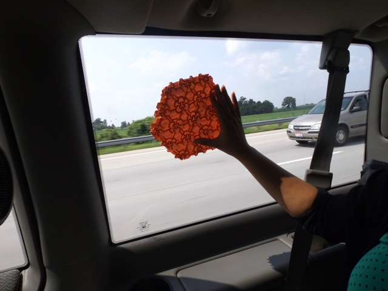

<div class="container">
  <div id="carousel-1" class="carousel" data-carousel-mode="fade">
    <figure class="carousel-active">
      
      <figcaption>
        <p>Holding up a tesselation folded in the car on the way to the Ohio Paper Folders convention</p>
      </figcaption>
    </figure>

    <button class="back carousel-control">
      <i class="fa fa-chevron-left" /></i>
    </button>
    <button class="forward carousel-control">
      <i class="fa fa-chevron-right"></i>
    </button>
  </div>
</div>
